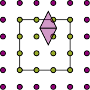

B-splines
B-splines have local support. Their degree p controls the shape of each piece; the basis count b controls how finely the interval is divided. Increasing b does not require increasing p.
poly = MultilevelKernelInterpolation.BsplinePolynomialEquidistant(dim=3, degree=3, nbasis=9)The basis explorer shows these functions. The plain constructor above provides neither buffers nor the buffered stabilization described below.
Cover protruding supports
Use BufferedBsplinePolynomialEquidistant when basis-function supports extend outside their assigned boxes. It adds knots around the box while preserving the uniform spacing needed by Toeplitz I2O.
buffered = MultilevelKernelInterpolation.BufferedBsplinePolynomialEquidistant(
dim=3, degree=3, nbasis=9,
buffer=MultilevelKernelInterpolation.AutoBufferFromProtrusion(),
)
AutoBufferFromProtrusion chooses the buffer from geometry during tree construction. ExplicitBuffer(n) fixes the count per side; NoBuffer() requests none. The I2I page explains how these policies behave across levels.
MultilevelKernelInterpolation.numbufferpoints(buffered) reports the constructed count. MultilevelKernelInterpolation.realizedprotrusion(buffered) reports the resulting domain extension. The raw basis count can exceed the requested nbasis because of these buffers.
Values are not coefficients
Let b_j be the spline basis and t_i its sample points. To approximate a function from its values, solve
\[S c = v,\qquad S_{ij}=b_j(t_i),\qquad v_i=f(t_i).\]
MultilevelKernelInterpolation.interpolationmatrix(poly) returns S: sample rows, basis columns. For the plain basis, sampled values satisfy v = S*c. Lagrange's cardinal basis would give the identity here; B-splines generally do not.
This example reconstructs a function in the spline space:
using MultilevelKernelInterpolation, LinearAlgebra
poly = MultilevelKernelInterpolation.BsplinePolynomialEquidistant(;
dim=1, degree=3, nbasis=9
)
S = MultilevelKernelInterpolation.interpolationmatrix(poly)
nodes = MultilevelKernelInterpolation.range(poly, 1)
values = @. 1 + nodes + nodes^2
coefficients = S \ values
@assert S * coefficients ≈ values
include(
joinpath(
pkgdir(MultilevelKernelInterpolation), "docs", "src", "assets", "code", "figures.jl"
),
)
using .GuideFigures
xs = range(0.0, 1.0; length=301)
reconstructed = transpose(basisvalues(poly, xs)) * coefficients
@assert maximum(abs, reconstructed .- (1 .+ xs .+ xs .^ 2)) < 1e-12
curvefigure(
xs,
["Spline reconstruction" => reconstructed, "1 + x² + x" => 1 .+ xs .+ xs .^ 2];
title="Sampling solve reproduces a quadratic",
ylabel="Value",
)It checks the representation, not a general interpolation-error bound.
Stabilize the sampling system
Uniform samples do not guarantee a well-conditioned system at high degree. The buffered implementation removes selected interior knots near each boundary to form a smaller basis for kernel interpolation. Buffering covers geometry; knot removal improves the sampling system.
Moments and level transfers retain the raw basis. Only I2O uses the reduced basis, with conversions before and after the coupling:
raw moments -> conversion -> reduced moments
| |
I2I / O2O kernel interpolationMultilevelKernelInterpolation.knotstoremove(degree, nbasis) chooses the number removed per boundary. The current default policy covers degrees 1–10; degrees 1 and 2 remove no knots. Removal is also skipped when the basis is too small.
MultilevelKernelInterpolation.interpolationmatrix(buffered) returns the reduced sampling matrix when removal is active. Its column count can differ from the raw moment size. Fewer functions remain after removal, so stabilization trades some approximation space for better conditioning at a fixed raw count.
Use the basis in I2O
For the square, unreduced case, kernel samples G and coupling coefficients W satisfy
\[S_{\mathrm{test}}\,W\,S_{\mathrm{trial}}^{\mathsf T}=G.\]
MultilevelKernelInterpolation applies the conversions one axis at a time. The B-spline I2O page explains both dense and Toeplitz routes, including the reduced basis.